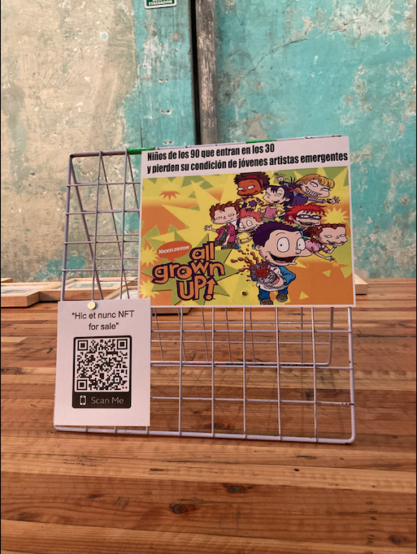

Memes Criticos
Primer nft en lo que era Hic et nunc. La idea fue hacer memes sobre todo lo que rodea (el arte) la crítica hacia los circuitos donde nos desenvolvemos o aspiramos a entrar y cómo estos mecanismos pueden ser un chiste burla o mofa de humor sarcástico para destacar problemas o situaciones donde todos nos vemos envueltos lo queramos o no, así cómo al igual repetimos patrones.
